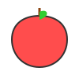

Finding the right thing to draw can feel difficult. A blank page often creates pressure, even for creative people. The right drawing idea helps you start, practice, and improve. Drawing ideas are simple concepts, subjects, or prompts that guide your artwork.
Artists use drawing prompts to build skills and explore creativity. A small sketch today can become a bigger artwork tomorrow. When I practice drawing, I notice one thing: consistency matters more than perfection.
🎁 CLAIM YOUR FREE DRAWING STARTER KIT NOW!Why Drawing Ideas Help Artists Improve
Drawing ideas remove the stress of deciding what to create. They give your mind a clear starting point. Creative practice helps improve observation, imagination, and problem-solving skills.
Easy Drawing Ideas for Beginners
Starting with simple subjects helps you build strong drawing foundations. Everyday objects make great beginner drawing ideas. They are easy to observe and practice.
Cute Drawing Ideas That Anyone Can Try
Cute drawings make art feel simple, fun, and relaxing. Rounded shapes, soft expressions, and simple designs can make any subject more friendly.
Kawaii & Doodle Ideas
Kawaii art comes from a Japanese style that focuses on cute and charming designs. You can turn everyday items into cute artwork.

Kawaii AppleCool & Creative Drawing Prompts
Creative drawing starts when you move beyond common subjects. Try drawing ideas that mix reality with imagination. Ask yourself: "What would this look like in another world?"
Nature Drawing Ideas
Nature provides endless drawing inspiration. It offers different shapes, textures, and colors to study. Landscapes help you practice space and composition.
Digital Art & Concept Ideas
Digital art gives artists endless creative possibilities. It combines traditional drawing skills with modern tools and workflows. Backgrounds create the world around your characters.
Drawing Challenges to Improve Your Skills
Drawing challenges help artists stay consistent. A challenge gives you structure and clear goals. Even short challenges can improve confidence and drawing habits.
7-Day Drawing Challenge
- Day 1: Household object
- Day 2: Favorite animal
- Day 3: Original character
- Day 4: Flower or houseplant
- Day 5: Outdoor scene
- Day 6: Favorite meal
- Day 7: Something original
Frequently Asked Questions
What are some easy drawing ideas?
Easy drawing ideas include everyday objects like cups, books, and flowers. These help you practice basic shapes and shading.
What should I draw when bored?
Try a quick doodle or a funny character. Random prompts like "a cat in space" can help spark your imagination.
How can I improve my drawing skills?
Improve your drawing skills by practicing regularly and studying different subjects. Focus on basic shapes, perspective, and shading.
Ready to start drawing?
Grab your pencil and start with one of these ideas today. Remember, practice makes perfect!